There are four different types of MOS field effect transistors as shown in fig. 10.17 all covered by the model going to be explained here. The ``First Order Model'' is a physical model with the drain current equations according to Harold Shichman and David A. Hodges [13].
The following table contains the model and device parameters for the MOSFET level 1.
| Name | Symbol | Description | Unit | Default | Typical |
| Is | 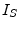 | bulk junction saturation current | 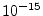 | ||
| N | bulk junction emission coefficient | ||||
| Vt0 | 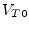 | zero-bias threshold voltage | 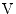 | 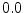 | |
| Lambda | channel-length modulation parameter | 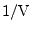 | 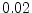 | ||
| Kp | 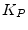 | transconductance coefficient | 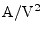 | 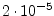 | 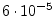 |
| Gamma | bulk threshold | 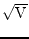 | 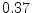 | ||
| Phi | 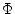 | surface potential | 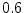 | 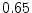 | |
| Rd | drain ohmic resistance | ||||
| Rs | source ohmic resistance | ||||
| Rg | gate ohmic resistance | ||||
| L | channel length | 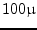 | |||
| Ld | 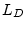 | lateral diffusion length | 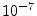 | ||
| W | channel width | ||||
| Tox | 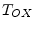 | oxide thickness | 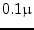 | 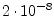 | |
| Cgso | gate-source overlap capacitance per meter of channel width | 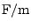 | 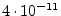 | ||
| Cgdo | 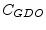 | gate-drain overlap capacitance per meter of channel width | |||
| Cgbo | 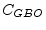 | gate-bulk overlap capacitance per meter of channel length | 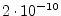 | ||
| Cbd | 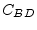 | zero-bias bulk-drain junction capacitance | 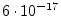 | ||
| Cbs | 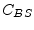 | zero-bias bulk-source junction capacitance | |||
| Pb | bulk junction potential | 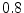 | 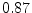 | ||
| Mj | 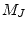 | bulk junction bottom grading coefficient | |||
| Fc | 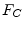 | bulk junction forward-bias depletion capacitance coefficient | |||
| Cjsw | 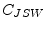 | zero-bias bulk junction periphery capacitance per meter of junction perimeter | |||
| Mjsw | 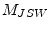 | bulk junction periphery grading coefficient | 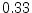 | ||
| Tt | 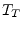 | bulk transit time | |||
| Kf | flicker noise coefficient | ||||
| Af | flicker noise exponent | ||||
| Ffe | 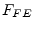 | flicker noise frequency exponent | |||
| Nsub | 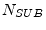 | substrate (bulk) doping density | 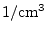 | 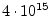 | |
| Nss | 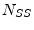 | surface state density | 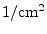 | 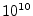 | |
| Tpg | 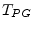 | gate material type (0 = alumina, -1 = same as bulk, 1 = opposite to bulk) | |||
| Uo | 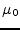 | surface mobility | 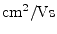 | ||
| Rsh | drain and source diffusion sheet resistance | square | |||
| Nrd | number of equivalent drain squares | ||||
| Nrs | number of equivalent source squares | ||||
| Cj | zero-bias bulk junction bottom capacitance per square meter of junction area | ||||
| Js | bulk junction saturation current per square meter of junction area | ||||
| Ad | drain diffusion area | ||||
| As | source diffusion area | ||||
| Pd | drain junction perimeter | ||||
| Ps | source junction perimeter | ||||
| Temp | device temperature |
|
|||
| Tnom | parameter measurement temperature |
|
Beforehand some useful abbreviation are made to simplify the DC current equations.
| (10.167) | ||
 |
(10.168) |
The bias-dependent threshold voltage depends on the bulk-source voltage or the bulk-drain voltage depending on the mode of operation.
| (10.169) |
The following equations describe the DC current behaviour of a N-channel MOSFET in normal mode, i.e. , according to Shichman and Hodges.
| (10.170) | ||
| (10.171) | ||
| (10.172) | ||
| (10.173) | ||
|
saturation region:
| ||
| (10.174) | ||
| (10.175) | ||
| (10.176) | ||
| (10.177) | ||
|
linear region:
| ||
| (10.178) | ||
| (10.179) | ||
| (10.180) | ||
| (10.181) | ||
with
| (10.182) |
In the inverse mode of operation, i.e.
, the same
equations can be applied with the following modifications. Replace
with , with and with
. The drain current  gets reversed. Furthermore the
transconductances alter their controlling nodes, i.e.
gets reversed. Furthermore the
transconductances alter their controlling nodes, i.e.
| (10.183) |
The current equations of the two parasitic diodes at the bulk node and their derivatives write as follows.
| (10.184) | ||||
| (10.185) |
with
| (10.186) |
With the accompanied DC model shown in fig. 10.19 it is possible to form the MNA matrix and the current vector of the intrinsic MOSFET device.
| (10.187) |
| (10.188) | ||
| (10.189) | ||
| (10.190) |
There are electrical parameters as well as physical and geometry parameters in the set of model parameters for the MOSFETs ``First Order Model''. Some of the electrical parameters can be derived from the geometry and physical parameters.
The oxide capacitance per square meter of the channel area can be computed as
| (10.191) |
Then the overall oxide capacitance can be written as
| (10.192) |
The transconductance coefficient can be calculated using
| (10.193) |
The surface potential is given by (with temperature voltage  )
)
Equation (10.194) holds for acceptor concentrations
() essentially greater than the donor concentration .
The bulk threshold  (also sometimes called the body effect
coefficient) is
(also sometimes called the body effect
coefficient) is
| (10.195) |
And finally the zero-bias threshold voltage writes as follows.
| (10.196) |
Whereas denotes the flat band voltage consisting of the work function difference between the gate and substrate material and an additional potential due to the oxide surface charge.
| (10.197) |
The temperature dependent bandgap potential  of silicon
(substrate material Si) writes as follows. With
the
bandgap is approximately .
of silicon
(substrate material Si) writes as follows. With
the
bandgap is approximately .
| (10.198) |
The work function difference gets computed dependent on
the gate conductor material. This can be either alumina (
), n-polysilicon (
 ) or p-polysilicon
(
). The work function of a semiconductor,
which is the energy difference between the vacuum level and the Fermi
level (see fig. 10.20), varies with the doping
concentration.
) or p-polysilicon
(
). The work function of a semiconductor,
which is the energy difference between the vacuum level and the Fermi
level (see fig. 10.20), varies with the doping
concentration.
| (10.200) |
The expression in eq. (10.199) is visualized in fig. 10.20. The abbreviations denote
| electron affinity of alumina | |
| electron affinity of silicon | |
| vacuum level | |
| conduction band | |
| valence band | |
| Fermi level | |
| intrinsic Fermi level | |
| bandgap of silicon at room temperature |
Please note that the potential is positive in p-MOS and negative in n-MOS as the following equation reveals.
| (10.201) |
When the gate conductor material is a heavily doped polycrystalline silicon (also called polysilicon) then the model assumes that the Fermi level of this semiconductor is the same as the conduction band (for n-poly) or the valence band (for p-poly). In alumina the Fermi level, valence and conduction band all equal the electron affinity.
If the zero-bias bulk junction bottom capacitance per square meter of
junction area  is not given it can be computed as follows.
is not given it can be computed as follows.
| (10.202) |
That's it for the physical parameters. The geometry parameters account for the electrical parameters per length, area or volume. Thus the MOS model is scalable.
The diffusion resistances at drain and gate are computed as follows. The sheet resistance refers to the thickness of the diffusion area.
| (10.203) |
If the bulk junction saturation current per square meter of the junction area and the drain and source areas are given the according saturation currents are calculated with the following equations.
| (10.204) |
If the parameters and are not given the zero-bias depletion capacitances for the bottom and sidewall capacitances are computed as follows.
| (10.205) | ||
| (10.206) | ||
| (10.207) | ||
| (10.208) |
The bulk-drain and bulk-source capacitances in the MOSFET model split into three parts: the junctions depletion capacitance which consists of an area and a sidewall part and the diffusion capacitance.
| (10.209) | ||
| (10.210) | ||
| (10.211) | ||
| (10.212) |
The diffusion capacitances of the bulk-drain and bulk-source junctions are determined by the transit time of the minority charges through the junction.
| (10.213) | ||
| (10.214) |
Charge storage in the MOSFET consists of capacitances associated with parasitics and the intrinsic device. Parasitic capacitances consist of three constant overlap capacitances. The intrinsic capacitances consist of the nonlinear thin-oxide capacitance, which is distributed among the gate, drain, source and bulk regions. The MOS gate capacitances, as a nonlinear function of the terminal voltages, are modeled by J.E. Meyer's piece-wise linear model [15].
The bias-dependent gate-oxide capacitances distribute according to the Meyer model [15] as follows.
| (10.215) | ||
| (10.216) | ||
| (10.217) | ||
|
| ||
| (10.218) | ||
| (10.219) | ||
| (10.220) | ||
|
| ||
| (10.221) | ||
| (10.222) | ||
| (10.223) | ||
| (10.224) | ||
| (10.225) | ||
| (10.226) | ||
|
linear region:
| ||
| (10.227) | ||
| (10.228) | ||
| (10.229) | ||
with
| (10.230) |
In the inverse mode of operation and need to be exchanged, changes its sign, then the above formulas can be applied as well.
The constance overlap capacitances compute as follows.
| (10.231) | ||
| (10.232) | ||
| (10.233) |
With these definitions it is possible to form the small signal Y-parameter matrix of the intrinsic MOSFET device in an operating point which can be converted into S-parameters.
![$\displaystyle Y = \begin{bmatrix}\parbox[t]{2.0cm}{\centering $Y_{GS} + Y_{GD} ...
...g_{mb}\\ -Y_{GB} & -Y_{BD} & -Y_{BS} & Y_{BD} + Y_{BS} + Y_{GB}\\ \end{bmatrix}$](img1827.png) |
(10.234) |
with
| (10.235) | ||
| (10.236) | ||
| (10.237) | ||
| (10.238) | ||
| (10.239) | ||
| (10.240) |
The thermal noise generated by the external resistors  ,
,  and
and
 is characterized by the following spectral density.
is characterized by the following spectral density.
| (10.241) |
Channel and flicker noise generated by the DC transconductance  and current flow from drain to source is characterized by the spectral
density
and current flow from drain to source is characterized by the spectral
density
| (10.242) |
The noise current correlation matrix (admittance representation) of the intrinsic MOSFET can be expressed as
| (10.243) |
This matrix representation can be easily converted to the noise-wave
representation
 if the small signal S-parameter
matrix is known.
if the small signal S-parameter
matrix is known.
Temperature affects some MOS model parameters which are updated
according to the new temperature. The reference temperature  in
the following equations denotes the nominal temperature
in
the following equations denotes the nominal temperature  specified by the MOS transistor model. The temperature dependence of
and
specified by the MOS transistor model. The temperature dependence of
and  is determined by
is determined by
 |
(10.244) | |
| (10.245) |
The effect of temperature on  and is modeled by
and is modeled by
| (10.246) |
where the
 dependency has already been described in
section 10.2.4 on page
dependency has already been described in
section 10.2.4 on page ![[*]](crossref.png) . The
temperature dependence of , , and is
described by the following relations
. The
temperature dependence of , , and is
described by the following relations
| (10.247) | ||
| (10.248) | ||
| (10.249) | ||
 |
(10.250) |
The temperature dependence of  is given by the relation
is given by the relation
| (10.251) |
An analogue dependence holds for .